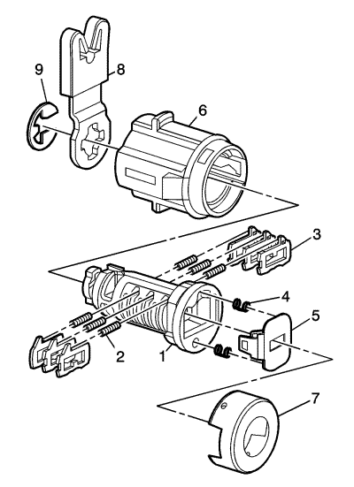

Codificación del cilindro de cierre de la puerta lateral frontal

El cilindro de cierre de la puerta usa 6 de las 8 posiciones de corte, de la 3 a la 8. Las posiciones del tumbador están escalonadas de lado a lado, 3 en un lado y 3 en el otro, no se auto-retienen y no encajan.
Nota: Todos los cilindros de cierre para llaves serradas lateralmente tienen tumbadores a la izquierda y a la derecha. La ubicación de los dientes del tumbador determina si es de derecha o de izquierda. Las ilustraciones de este procedimiento muestran los tumbadores derechos en la parte superior y los tumbadores izquierdos en la parte inferior. Todos los tumbadores están marcados con 1R, 1L, 2R o 2L. El número representa la profundidad del corte y la letra significa derecha (R) o izquierda (L).
- Inserte dos muelles (4) en los dos pozos de muelle en la cabeza del cilindro de cierre.
- Encaje el conjunto de obturador (5) en el cilindro como se muestra en la ilustración.
- Mantenga el cilindro (1) de forma que la cavidad del cilindro esté boca arriba (con la cavidad del cilindro lo más cerca posible de la parte posterior del mango de la llave).
- Inserte los muelles de tumbador (2) en las 3 cavidades de muelle.
- Inserte el tumbador (3) para la posición de corte de llave tres en la ranura más cercana a la parte superior del mango de la llave del cilindro de cierre. Monte los demás tumbadores, en las posiciones de corte de llave 5 y 7, siguiendo la codificación de llave y el mismo proceso, use los tumbadores marcados como 11 a 14. El tumbador 11 se usa cuando el corte de código de llave es el nº. 1, el 12 es el nº. 2, el 13 es el nº. 3 y el 14 es el nº. 4.
- Compruebe que los cargadores se han cargado correctamente insertando la llave en el cilindro. Todos los tumbadores deben estar al nivel del cuerpo del cilindro de cierre.
- Gire el cilindro para que el pozo del muelle lateral esté boca arriba. Retire la llave y aguante los tumbadores.
- Inserte los muelles de tumbador en las 3 cavidades de muelle.
- El primer tumbador que está más cerca de la parte delantera del cilindro de cierre que se carga será la cuarta posición de corte de llave, el cuarto número en el código de la llave. Monte los demás tumbadores para las posiciones de corte de llave 6 y 8, use los tumbadores identificados como 1 a 4.
- Compruebe que los cargadores se han cargado correctamente insertando la llave en el cilindro. Todos los tumbadores deben estar al nivel del cuerpo del cilindro de cierre. Retire la llave y aguante los tumbadores en su lugar.
- Inserte la llave y lubrique ligeramente el diámetro del cuerpo del cilindro y las superficies de los tumbadores y aplique una pequeña cantidad en la cabeza del cilindro usando la grasa suministrada.
- Inserte el cilindro de cierre (1) en la caja (6). Quite la llave.
- Alinee la tapa del cilindro de cierre (7) y fíjela empujando ligeramente la tapa con la mano hasta que encaje.
- Monte la palanca (8) y el e-clip (9) para retener el conjunto de la palanca como se muestra en la ilustración.
- Inserte la llave y gire la cerradura para comprobar que está bien montada y funciona sin problemas.
| © Copyright Chevrolet Europe. All rights reserved |